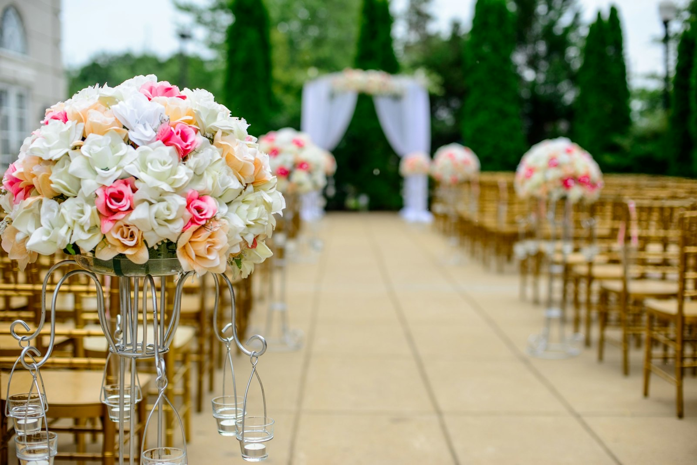

Ceremony to last dance
Wedding florals
Ceremony structures, bridal flowers and reception tables designed as one sequence, so the day feels composed from the aisle to the last dance.
- Ceremony arches & aisles
- Bridal & party flowers
- Reception tables
- Mehndi & baraat details
Priced per proposal